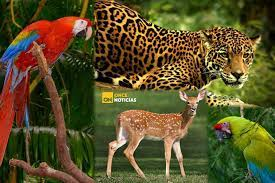

Pagina principal
parque nacional la tigra
Biosfera del rio platano
Animales de Honduras
Animales de Honduras
Especies de animales
ANIMALES: En Honduras existen mas de 500 especies de animales
- Terrestre.
- Acuaticos.
- Mamiferos.
- Entre Otros.
ENCONTRANDOSE LOS SIGUIEMTES EN PELIGRO DE EXTINCION!
- 1.Musaraña Hondureña
- 2.Ihuana verde
- 3.Tiburon ballena
- 4.Gacamayo rojo
- 5.Jaguar
- 6.Aguila crestada
- 7.Tucan
- 8.pava pajuil
- 9.Manati
- 10.Colibri Esmeralda
- entre otros...
